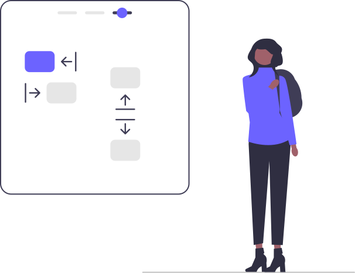
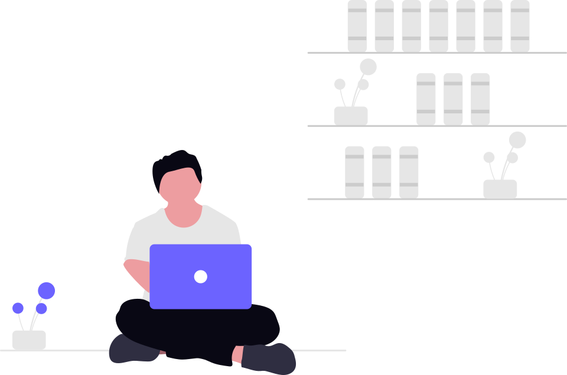
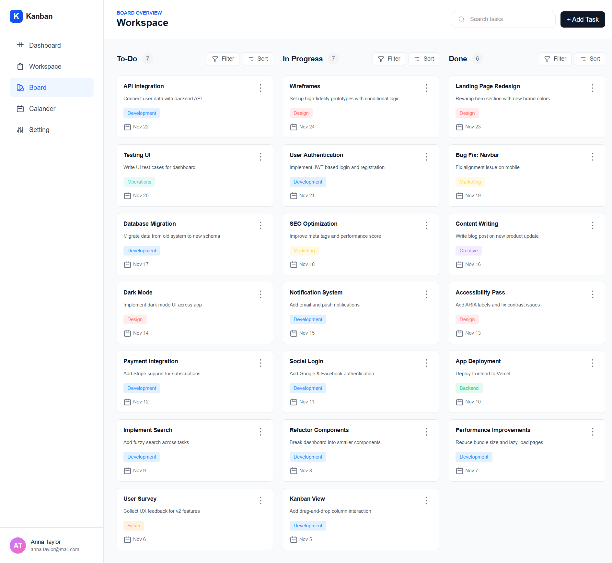

1. My Learning Goals
◎
- Become a skilled full-stack developer
- Learn modern technologies like React, Next.js and Node.js
- Build real-world projects
- Contribute to open source
- Get a job as a software developer
This page contains more information about my learning goals, interests, and future plans as a web developer.


I want to become a full-stack web developer who can build complete, scalable, and user-friendly web applications. I am especially interested in working on products that create real value for users and solve meaningful problems.

I want to build a frontend Kanban board application that helps users organize tasks, manage workflows, and track project progress. This project will help me practice React.js, state management, and interactive UI development by building a practical task management tool.
Key Features: